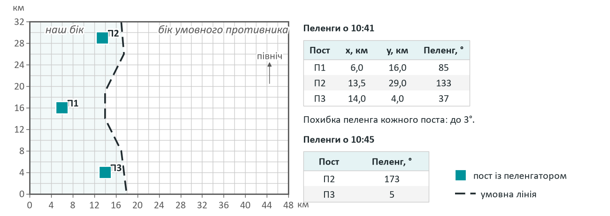
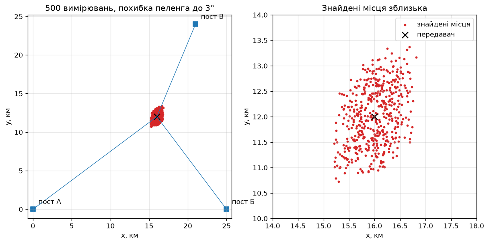

Тема 6. Визначення координат джерел радіовипромінювань
Тут зібрано все для практичної частини теми: вправа з картою, відповіді до якої можна перевірити на цій сторінці, аркуш для друку, інтерактивна демонстрація до рис. 6.2, демонстрація до завдання 1, інструкція до завдання 2, Jupyter Notebook до завдання 3, посилання на публікації, названі в темі, і відповіді.
Вправа № 1. Знайдіть передавач за пеленгами
О 10:41 в ефір вийшла радіостанція 262 з теми 4. Радіостанцію запеленгували три пости навчального району (рис. 6.4). Навчальний район — це вигадана місцевість, яку умовна лінія ділить на наш бік і бік умовного противника. Потрібні лінійка і транспортир.

Пеленги як таблиці
Пеленги о 10:41:
| Пост | x, км | y, км | Пеленг, ° |
|---|---|---|---|
| П1 | 6,0 | 16,0 | 85 |
| П2 | 13,5 | 29,0 | 133 |
| П3 | 14,0 | 4,0 | 37 |
Пеленги о 10:45:
| Пост | Пеленг, ° |
|---|---|
| П2 | 173 |
| П3 | 5 |
Похибка пеленга кожного поста: до 3°. Пеленг відлічують від напрямку на північ за годинниковою стрілкою.
- Нанесіть на карту пеленги постів П1 і П2. Запишіть координати точки перетину пеленгів.
- Додайте пеленг поста П3. Запишіть координати центру трикутника з трьох ліній.
- Виміряйте відстань від поста П1 до центру трикутника. На скільки похибка 3° зсуває лінію пеленга на такій відстані? Порівняйте цей зсув із найбільшою стороною трикутника.
- О 10:45 пости П2 і П3 виміряли пеленги на інший передавач. Нанесіть ці пеленги. Чому місце цього передавача визначити важко? Пеленг якого поста допоможе і чому?
Перевірте себе
Оберіть відповіді й натисніть «Перевірити». Кнопка «Показати пояснення» відкриває відповіді до всіх кроків.
Аркуш для друку
Аркуш до вправи № 1 (файл PDF, дві сторінки формату А4). На першій сторінці карта, на якій 1 см відповідає 2 км. Навколо кожного поста на карті надруковано шкалу кутів, тому транспортир не потрібен: вистачить лінійки. На другій сторінці текст вправи, пеленги й місце для відповідей.
Пеленги й різниця часу на карті
Карта, пости й передавач тут ті самі, що на рис. 6.2, б підручника. Пунктир — це умовна лінія, ліворуч від неї наш бік. Перетягніть передавач або торкніться іншого місця карти. Кнопки обирають, що вимірюють пости: пеленги на передавач чи різницю часу приходу сигналу в кожній парі постів. Повзунок задає похибку вимірювання. Сіра смуга навколо кожної лінії показує, де може пройти лінія за такої похибки. Червона область лежить у всіх трьох смугах: там може бути передавач. Площу червоної області сторінка рахує лише в межах карти. Це модель: справжній пост не прийме сигналу далекого передавача, а в моделі кожен пост приймає сигнал передавача в будь-якому місці карти.
Пеленги: П1 109°, П2 167°, П3 22°червона область: 1,1 км²
Відсуньте передавач праворуч, далі від постів. Як змінилася червона область? Перевірте себе за відповідями.
Демонстрація до завдання 1
У підручнику завдання 1 записано так:
Потрібен комп’ютер або телефон з інтернетом. Демонстрація на сторінці теми показує два пости й область, де може бути передавач. Повзунки змінюють похибку пеленга і кут перетину пеленгів. За якого кута область найменша? Як змінюється область, коли пеленги майже збігаються?
Обидва пости стоять за 15 км від передавача, як на рис. 6.3, б підручника. Лінія від кожного поста показує пеленг без похибки. Блідий клин показує, куди потрапить лінія, якщо пост помилиться на кут похибки в один або в другий бік. Передавач може бути там, де клини накладаються: цю область зафарбовано червоним.
Область, де може бути передавач, завдовжки 2,2 км від кінця до кінця.
Інструкція до завдання 2
У підручнику завдання 2 записано так:
Потрібен комп’ютер із редактором таблиць, наприклад Excel, Google Таблиці чи LibreOffice Calc. Запишіть формули, які за координатами двох постів і двома пеленгами обчислюють координати точки перетину. Перевірте формули на постах П1 і П2 вправи. Інструкція є на сторінці теми.
Точка на лінії пеленга лежить на відстані d від поста: її координата x дорівнює x поста плюс d, помножене на синус пеленга, а координата y дорівнює y поста плюс d, помножене на косинус пеленга. Точка перетину лежить на лініях обох постів. Формули нижче знаходять із цієї умови відстань d, а за відстанню координати точки.
- Відкрийте редактор таблиць і створіть порожню таблицю.
- У перші три рядки впишіть заголовки й дані постів П1 і П2 з таблиці вправи:
A B C D 1 Пост x, км y, км Пеленг, ° 2 П1 6,0 16,0 85 3 П2 13,5 29,0 133 - У клітинки E1 і F1 впишіть заголовки «sin» і «cos». Далі впишіть формули. Кожна формула починається зі знака «=».
Клітинка Формула Що вона обчислює E2 =SIN(RADIANS(D2)) синус пеленга першого поста: яку частку шляху лінія пеленга проходить на схід F2 =COS(RADIANS(D2)) косинус пеленга першого поста: яку частку шляху лінія проходить на північ E3 =SIN(RADIANS(D3)) синус пеленга другого поста F3 =COS(RADIANS(D3)) косинус пеленга другого поста B5 =E2*F3-F2*E3 допоміжне число; воно дорівнює нулю, коли лінії пеленгів паралельні й не перетинаються B6 =((B3-B2)*F3-(C3-C2)*E3)/B5 відстань від першого поста до точки перетину, км B7 =B2+B6*E2 координата x точки перетину, км B8 =C2+B6*F2 координата y точки перетину, км - Порівняйте числа в клітинках B7 і B8 з точкою, яку ви знайшли на карті у кроці 1 вправи. Числа мають відрізнятися не більш як на 1 км.
- Замініть рядок 3 даними поста П3. Таблиця одразу покаже точку перетину пеленгів П1 і П3.
Функція RADIANS переводить градуси в радіани: функції SIN і COS приймають кут у радіанах. Десяткові числа вписуйте так, як заведено у вашому редакторі: з комою або з крапкою. Якщо редактор не приймає назв функцій, знайдіть синус, косинус і переведення в радіани в списку функцій редактора.
Jupyter Notebook до завдання 3
У підручнику завдання 3 записано так:
Потрібен комп’ютер з інтернетом. Jupyter Notebook — це файл, у якому пояснення чергуються з короткими програмами мовою Python. Відкрийте файл зі сторінки теми в безкоштовному сервісі Google Colab, що працює у браузері. Програма сотні разів «вимірює» пеленги трьох постів із випадковою похибкою й показує знайдені місця. Виконайте завдання, записані в кінці файлу.
Щоб працювати в сервісі Google Colab, нічого встановлювати не треба. Потрібен лише обліковий запис Google.
- Клацніть посилання «Модель похибок мовою Python»: браузер збереже Jupyter Notebook, файл
tema-6-jupyter-notebook.ipynb, в теці завантажень. - Відкрийте сайт сервісу colab.research.google.com і ввійдіть в обліковий запис Google.
- У меню «Файл» оберіть команду, яка відкриває Jupyter Notebook, збережений на комп’ютері. Якщо меню сервісу англійською, це меню File і команда Upload notebook. Укажіть збережений файл: він відкриється, і першим у ньому буде заголовок «Тема 6. Модель похибок мовою Python».
- Jupyter Notebook складається з частин, які називають комірками: одні комірки містять текст, а інші програму. Перша комірка з програмою починається словами «# Пости й передавач». Клацніть цю комірку й натисніть Shift+Enter: комірка виконається, а під нею з’явиться результат.
- Так само, згори донизу, виконуйте решту комірок із програмою, а комірки з текстом читайте. Під третьою програмою з’явиться рисунок, як нижче.

Далі працюйте за текстом файлу: текст закінчується завданнями.
Відповіді
Відповіді до вправи, контрольних запитань, задач і завдань теми. Спершу виконайте вправу самостійно.
Публікації, названі в темі
- Cospas-Sarsat Distress Alerts. Сторінка міжнародної системи пошуку і порятунку «Коспас-Сарсат», англійською мовою. На сторінці наведено, скільком людям система допомогла врятуватися з 1982 р.
- PLASTUN-RP3000. Сторінка мобільної пеленгаційної системи «Пластун» на сайті компанії «Інфозахист», українською мовою. Тут наведено інструментальну похибку пеленгатора: менше 0,5°. Число 3° у темі взято з каталогу компанії: це середньоквадратична похибка пеленгування в діапазоні робочих частот.
- GEKATA. Сторінка комплексу радіотехнічної розвідки «Геката» на сайті компанії «Інфозахист», українською мовою.
- Spectrum Monitoring. Довідник Міжнародного союзу електрозв’язку про спостереження за радіочастотним спектром, видання 2011 р., англійською мовою. Розділ довідника про визначення місця передавача описує тріангуляцію, метод різниці часу приходу і вплив відбитих сигналів на пеленг.